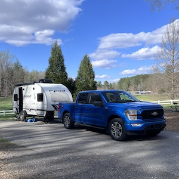
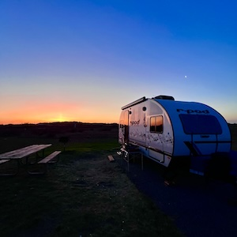
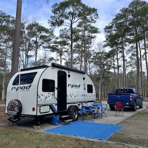
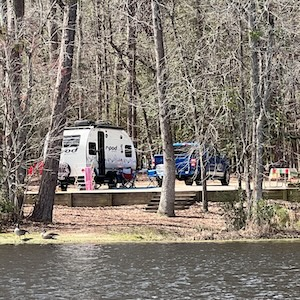
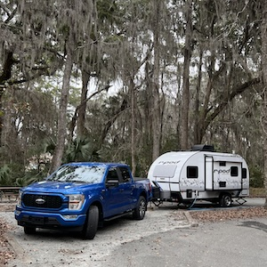

Our First Southeast Coastal Trip
(Georgia—South Carolina—North Carolina)
 Tanglewood
Park Campground, Clemmons, NC
03/17-03/18/2026
Site C17
Connections: water, electricity and sewer (full
hookups)
This was just an overnight stop for us, on our way
home to Chattanooga from Oregon Inlet. Tanglewood is
a very nice, wooded, rv-only campground. The sites
are relatively large and nicely spaced, but some are
not particularly level. Our site, at the edge of a
large field, was nicer than most. Although this was
just an overnight stop for us, we took advantage of
the extensive walking trails in the park, which are
easily accessed from the campground.
|
 Oregon
Inlet Campground, Cape Hatteras National Seashore,
Nags Head, NC
03/13-03/17/2026
Site C17
Connections: water and electricity; dump station
across Highway 12
Sites at Oregon Inlet are very narrow, are not
particularly long, and are closely spaced. We had no
problem fitting, but it was a bit of a struggle for
larger rigs. The campground is a short walk, through
the dunes, to the ocean-side beach, where we flew
kites one afternoon. We spent our last night hooked
up to our tow vehicle, as Millie shook in gusty 40+
mph winds. She performed perfectly, despite heavy
wind-driven rain. We enjoyed our visit with friends,
who camped in a nearby site. We went out with them
to The Dunes (restaurant) for a breakfast and to
Salt & Cypress Kitchen and Cocktails for a
dinner, both of which were very nice. We also
thoroughly enjoyed our visit to The Kitty Hawk First
Flight Museum and the Wright Brothers Monument. Note
that the dump station is not in the campground;
instead, it's at the Oregon Inlet Fishing Center, on
the other side of Highway 12.
|
 Cedar Point Campground,
Croatan National Forest, near Emerald Isle, NC
03/09-03/13 2026
Site 14
Connections: electricity only; water spigot near
site; dump station
Sites at Cedar Point Campground are all pretty
similar, paved and level with ample space between
them; most are quite large (long), by our standards.
The bathhouse is OK, but could stand some
renovation. Showers, in individual shower rooms (a
plus), are warm, if you wait long enough (several
cycles of the spring-loaded push button). Found
beach access, with free parking, near Indian Beach,
on Bogue Banks (island), 13 miles from the
campground. It's a short drive to Publix, just 10
minutes (4.5 miles), for groceries. Considered doing
the Paddler's Loop at Cedar Point, but parts of it,
viewed from Tidelands Trail, would not be navigable
in our kayak. Time and weather constraints also
worked against us for kayaking. Tidelands trail,
some of which is on elevated boardwalk, is very nice
and the trailhead is a short walk from the
campground. Overall, this is a nice, quiet
campground, very pleasant.
|
 Little Pee
Dee Sate Park, Dillon, SC
03/06-03/09 2026
Site 9
Connections: water and electricity; dump station
Had a beautiful lake-front site at Little Pee Dee
State Park. Enjoyed kayaking, hiking, and relaxing.
Be forewarned; it is a bit noisy, with honking
(geese), quacking (ducks), peeping (frogs), and
hooting (owls), all pleasant sounds. For supplies,
Walmart, Food Lion, etc. are 20 minutes away, in
Dillon. The sites are sand and the roads are dirt,
but even with the rain we had on our last night, it
wasn't bad. Thoroughly enjoyed our stay.
|
 Skidaway Island State
Park, Savannah, GA
03/02-03/06 2026
Site 65
Connections: water and electricity; dump station
Drove to Skidaway from home (Chattanooga). Left very
early trying to avoid Atlanta traffic, but ended up
in the midst of it. Arrived at Skidaway shortly
after 1:00 pm to discover that site 65 is a
handicapped site, with indicated restrictions. When
we made our online reservations, all sites were
represented as handicap accessible. We were assured
by park staff that it was no problem for us to
occupy it. Other than that, our pull-through site
was perfect for our stay in this beautiful park. The
bathhouses are very nice, each with 2 showers and
laundry facilities; walking trails lead from the
campground to an adjacent marsh; and the camp store
is well worth visiting. At the time of our visit,
major renovations to parts of the campground were
underway, which were a bit of a distraction, but
should benefit future visitors. During our three
full days at Skidaway, we enjoyed downtown Savannah,
Tybee Island, Fort Pulaski National Monument, and
Wormsloe Historic Site, all of which were
worthwhile. Heidi is only now reading Midnight in
the Garden of Good and Evil and wishes she had done
so before visiting Savannah.
|
|